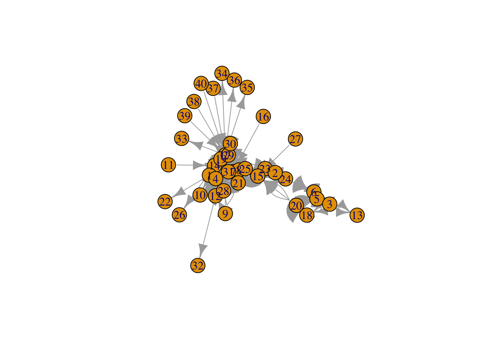
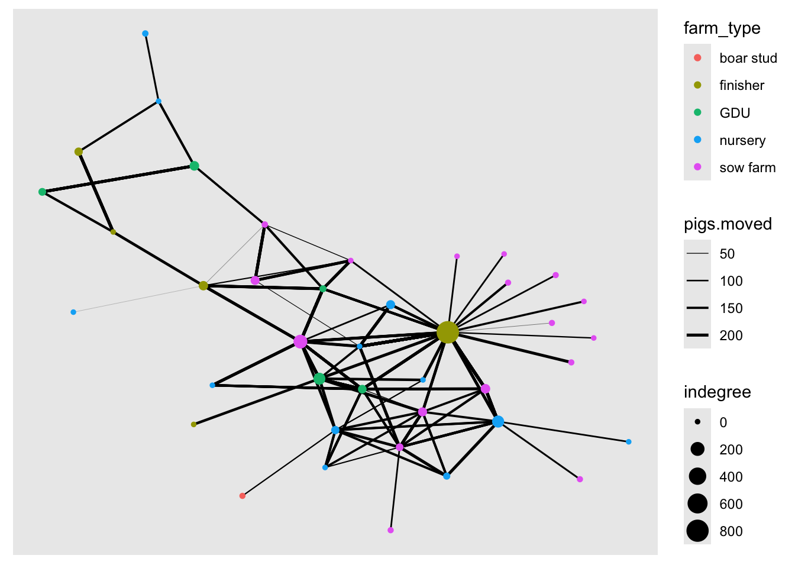
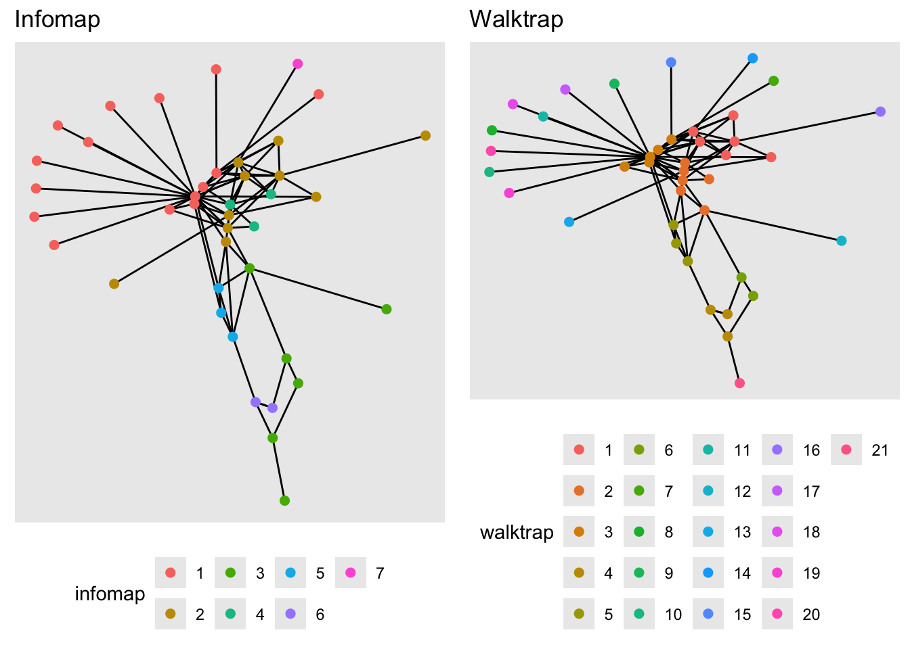
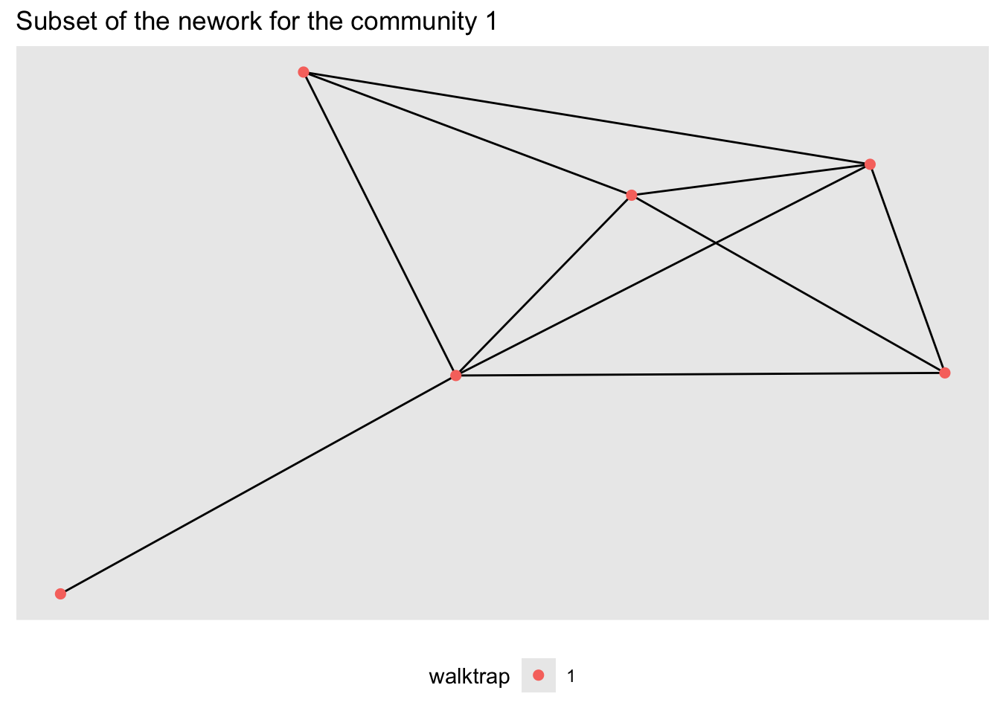
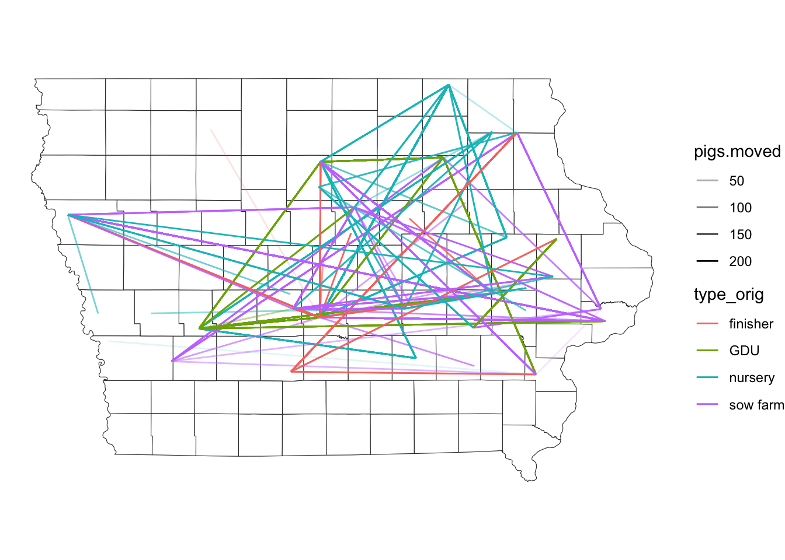

Lab 10 -
Pablo Gomez
2024-03-13
In this lab we will start making our first network objects, obtain
network statistics and some visualization of the data. We will use data
from a library called stnet so make sure you have this and
all the required libraries installed
install.packages("tidygraph")
install.packages("igraph")
install.packages("purrr")
install.packages("ggraph")
install.packages("devtools")
devtools::install_github("spablotemporal/stnet")1 Creating the network
# Libraries we will use:
library(dplyr) # for data manipulation
library(ggplot2) # For making figures
library(ggraph) # For visualization of the networks
library(igraph) # for network analysis
library(tidygraph) # tidyverse friendly network analysis
library(purrr) # for data manipulation
library(ggpubr)
# Loading the data from the stnet package ------------
# Load the data for nodes
node <- stnet::SwinePrem %>% # load the data from the stnet library
mutate(id = as.character(id)) # change the id to variable to character
# Load the data for edges
edge <- stnet::SwineMov %>%
mutate(id_orig = as.character(id_orig), id_dest = as.character(id_dest))The data sets we will be using are:
nodewhich includes the information of the farmsedgewhich includes the information for the movements between the farms.
We use the function as_tbl_graph() to create the network
from a data.frame. This function takes as arguments:x which
requires the contacts data and assumes that contacts are directed. If we
print the results, we will see a object from the class
tbl_graph, which we will explain:
net <- as_tbl_graph(edge)
net## # A tbl_graph: 40 nodes and 1611 edges
## #
## # A directed multigraph with 1 component
## #
## # Node Data: 40 × 1 (active)
## name
## <chr>
## 1 17
## 2 12
## 3 14
## 4 11
## 5 7
## 6 9
## 7 8
## 8 1
## 9 19
## 10 6
## # ℹ 30 more rows
## #
## # Edge Data: 1,611 × 6
## from to date pigs.moved type_orig type_dest
## <int> <int> <chr> <int> <chr> <chr>
## 1 1 7 8/20/15 160 finisher sow farm
## 2 1 7 8/20/15 76 finisher sow farm
## 3 1 3 9/11/15 155 finisher nursery
## # ℹ 1,608 more rowsThe results of printing the object will show us the number of nodes and edges, we can see that our network has 40 nodes and 1611 edges. Then we can also see the attributes for the nodes (which in this case there is only the name) and the edges (which for this example has from, to, date, pigs.moved, type_orig, and type_dest).
1.1 Adding extra attributes
We can treat this object like two data frames that are joined by an
key or identification variable. Whenever we want to access one of the
data frames to modify it, we can use either the function
activate() or when using the pipes we can use
%N>% to call the nodes or %E>% to call
the edges. In the next example we will add the rest of the node
information to our tbl_graph
net <- net %N>% # <- Notice we are including 'N' inside our pipe to specify we want to access the nodes
left_join(node, by = c('name' = 'id')) # Now we join to the node data frame to include other variables# We can ask for the nodes data specifically to see the changes
net %N>%
data.frame()1.2 Calculating centrality measures
We can use other network centrality measures such as outdegree, closeness, betwenness, among others. In the following code chunk, we will calculate more centrality measures:
net <- net %>% # This is our entwork data
mutate(outdegree = centrality_degree(mode = 'out', loops = F), # calculate the outdegree
closeness = centrality_closeness(), # calculate the closeness
betweenness = centrality_betweenness(), # calculate betweenness
Nbs = neighborhood.size(graph = .) # calculate the number of neighbors
)## Warning: There was 1 warning in `mutate()`.
## ℹ In argument: `Nbs = neighborhood.size(graph = .)`.
## Caused by warning:
## ! `neighborhood.size()` was deprecated in igraph 2.0.0.
## ℹ Please use `ego_size()` instead.# lets have a look at our network with the new variables
net## # A tbl_graph: 40 nodes and 1611 edges
## #
## # A directed multigraph with 1 component
## #
## # Node Data: 40 × 9 (active)
## name name.y lat long farm_type outdegree closeness betweenness Nbs
## <chr> <fct> <dbl> <dbl> <fct> <dbl> <dbl> <dbl> <dbl>
## 1 17 US Farm Le… 41.6 -93.6 finisher 68 0.04 220. 20
## 2 12 Uncle Bill… 41.7 -92.7 nursery 5 0.0233 46.1 10
## 3 14 Western Io… 42.4 -96.3 nursery 15 0.0345 64.7 9
## 4 11 Loess Hill… 41.7 -95.9 nursery 1 0.0217 0 2
## 5 7 Kloubec Koi 41.8 -91.8 GDU 3 0.0217 25.2 9
## 6 9 Kroul Farms 41.9 -91.5 nursery 6 0.0270 0 4
## 7 8 Johnson Fa… 42.9 -93.6 sow farm 83 0.0270 42.2 10
## 8 1 Iowa Selec… 42.5 -93.3 sow farm 30 0.0312 29.8 10
## 9 19 Kris Del F… 41.6 -90.6 sow farm 397 0.0333 39.7 6
## 10 6 Safari Iow… 41.6 -92.0 GDU 11 1 3 4
## # ℹ 30 more rows
## #
## # Edge Data: 1,611 × 6
## from to date pigs.moved type_orig type_dest
## <int> <int> <chr> <int> <chr> <chr>
## 1 1 7 8/20/15 160 finisher sow farm
## 2 1 7 8/20/15 76 finisher sow farm
## 3 1 3 9/11/15 155 finisher nursery
## # ℹ 1,608 more rowsTo visualize the network we can use the function
plot().
#plot network
plot(net)
2 Network visualization
We can use base R to make our figures, but since in this workshop we
have been focusing on ggplot2, we will use the library ggraph which is
based in ggplot2. The way the library ggraph works is very
similar to ggplot2, we use the function
ggraph() to set our empty canvas, same way we would do with
the function ggplot() in
ggplot2. The libraryggraph` also introduces a bunch of new
geometry types for both the nodes and the edges.
2.1 Node attributes
2.1.1 Color
We can get specific attributes from the tbl_graph inside
the aes() argument, similar to what we would do for
ggplot2. In the following plot, we will set the node color to the type
of farm. Let’s try it:
ggraph(graph = net) + # First we set our empty canvas
geom_edge_link() + # Add the edges
geom_node_point(aes(color = farm_type), size = 3) # add the nodes## Using "stress" as default layout## Warning: Using the `size` aesthetic in this geom was deprecated in ggplot2 3.4.0.
## ℹ Please use `linewidth` in the `default_aes` field and elsewhere instead.
## This warning is displayed once every 8 hours.
## Call `lifecycle::last_lifecycle_warnings()` to see where this warning was
## generated.
2.1.2 Node size
We will use the indegree value to assign the node size. First we will
calculate indegree using the function centrality_degree()
with the argument mode = "in", and we will also get rid of
the loops with the argument loops = F.
# First calculate the indegree for the nodes:
net <- net %>%
mutate(
indegree = centrality_degree(mode = 'in', loops = F),
outdegree = centrality_degree(mode = 'out', loops = F)
)
# Now we use ggraph to visualize it in the network
ggraph(net, layout = 'kk') + # this is our empty canvas
geom_edge_link(aes(width = pigs.moved)) + # Add the edges
geom_node_point(aes(color = farm_type, size = indegree)) + # Add the nodes
scale_edge_width(range = c(0.01, 0.9)) # we set the range for the width of the edges
2.2 Layouts
We can change the position of the nodes using the argument
layout. If we don’t specify any layout, ggraph will
automatically set the layout ‘stress’. Force directed layouts place the
nodes in fixed places based on various criteria. The layouts ‘nicely’
and ‘kk’ force the network in clear layouts, based on the position of
the nodes in the network in terms of connectivity. They also attempt to
keep the distance between connected nodes fixed.
# Plot with layout nicely
ggraph(net, layout = 'nicely') +
geom_edge_link() + # Add the edges
geom_node_point(aes(color = farm_type), size = 3) + # add the nodes
labs(title = 'Layout nicely')# Plot with layout kk
ggraph(net, layout = 'kk') +
geom_edge_link() + # Add the edges
geom_node_point(aes(color = farm_type), size = 3) +
labs(title = 'Layout KK')You can read more about the different layouts available HERE
2.3 Exercise 2:
Let’s have a look at different layouts to see how the network changes. Try using a couple of different layouts to produce a different figure (i.e. ‘fr’, ‘lgl’). Submit two additional networks with the layout used in the title.
2.4 Edge attributes
We can change the size of the edge to represent the number of pigs moved between nodes
ggraph(net, layout = 'kk') +
geom_edge_link(aes(width = pigs.moved)) + # Add the edges
geom_node_point(aes(color = farm_type), size = 3) +
scale_edge_width(range = c(0.01, 0.9))3 Further manipulation of the network
We can use some of the functions for data manipulation such as
filter(), since filtering uses boolean operations, we can
use some network properties for the filtering
3.1 Filtering by edge variables
We will use the function filter() to select only
observations where there was more than 150 animals moved
net %E>% # This is the network
filter(pigs.moved > 150) %>% # We filter the edges for only the ones with > 150 animals
# we visualize the graph:
ggraph() +
geom_edge_link() +
geom_node_point(size = 4)## Using "stress" as default layoutYou will notice that there are a few of isolated nodes that does not connect to the main network, this is because we only filtered the edges, but not the nodes.sometimes we want this, but other times we would like to remove the noeds as well. For this we will add an extra line tot the code we previously did:
net %E>% # This is the network
filter(pigs.moved > 150) %N>% # We filter the edges for only the ones with > 150 animals
filter(!node_is_isolated()) %>% # THIS IS THE LINE WE ADDED to filter the isolated nodes out
# we visualize the graph:
ggraph() +
geom_edge_link() +
geom_node_point(size = 4)## Using "stress" as default layout
Notice that in the code I use both the operators %N>%
and %E>% depending on what I am filtering.
3.2 Filtering by node neighborhood
We can filter the network for the neighborhood of a specific node.
The function convert() will convert the network to the
nodes that are connected with a specific node.
id <- 1 # first we define the id of the node we want
#then we can visualize its neighborhood:
net %>% # this is our network
convert( # We use the function convert() to subset our network
to_local_neighborhood, # we specify that we want to convert to a local neighborhood
node = id, # this is the node id we will filter by
order = 1, # this is the order of nbs
mode = 'all' # the type of contact
) %>%
# then we create a variable to color our index node:
mutate(index = ifelse(.tidygraph_node_index == id, '1', '0')) %>%
# and visualize the network
ggraph() +
geom_edge_link() +
geom_node_point(aes(col = index, shape = index), size = 5)## Using "stress" as default layout4 Community detection
In this section we will use different algorithms to identify communities in our network.
# First we need to simplify the network
c <- net %E>% # we call our network and activate the edges
mutate(N = as.integer(1)) %>% # create a variable for the number of movements (each row is 1 movement)
convert(to_simple) %E>% # now we will convert it to a simple network
mutate(weight = map_int(.orig_data, ~.x %>% pull(N) %>% sum())) %N>% # We have to sum all the repeated movements
mutate(walktrap = factor(group_walktrap(weights = weight)), # use the walktrap algorithm for community detection
infomap = factor(group_infomap(weights = weight))) # use the infomap for community detectionThen we will create an empty list to fill with plots and compare the different algorithms.
# Create the empty list
CP <- list()
# Make a plot for the edges only
pc <- c %>% # our simplified network
ggraph(layout = 'nicely') + # call the ggraph function
geom_edge_link() + # add the edges
theme(legend.position = 'bottom') # set the legend position to bottom
CP[['Infomap']] <- pc + # We call our plot with only the edges
geom_node_point(aes(col = infomap), size = 2) + # we add the nodes
labs(title = 'Infomap') # title of our plot
CP[['Walktrap']] <- pc +
geom_node_point(aes(col = walktrap), size = 2) +
labs(title = 'Walktrap')
# We arrange our plots in a single figure
ggarrange(plotlist = CP)
We can select specific communities to show by filtering by the newly created community variable.
c %N>%
filter(walktrap == '1') %>% # filter for community 1
ggraph(layout = 'nicely') + # call the ggraph function
geom_edge_link() + # add the edges
geom_node_point(aes(col = walktrap), size = 2) + # we add the nodes
theme(legend.position = 'bottom') + # set the legend position to bottom
labs(title = 'Subset of the nework for the community 1')
5 Spatial representation of the network
Now we will use the network we created and the spatial location of
our farms to see the movements on a map.
We will be using the sf package to manipulate the spatial
objects, and the ggplot2 package for visualization.
In the stnet package there is a spatial polygons data,
which includes the counties in the state of Iowa.
# Loading the packages
library(sf) # Package for spatial objects## Linking to GEOS 3.11.0, GDAL 3.5.3, PROJ 9.1.0; sf_use_s2() is TRUElibrary(ggplot2) # package for plots
# We load the spatial object from the package stnet
iowa <- st_read(system.file("data/Io.shp", package = "stnet"))## Reading layer `Io' from data source
## `/Library/Frameworks/R.framework/Versions/4.3-arm64/Resources/library/stnet/data/Io.shp'
## using driver `ESRI Shapefile'
## Simple feature collection with 99 features and 2 fields
## Geometry type: POLYGON
## Dimension: XY
## Bounding box: xmin: -96.63567 ymin: 40.37454 xmax: -90.13931 ymax: 43.50465
## Geodetic CRS: WGS 84# plot map using sf
plot(iowa$geometry)
Next we will transform the nodes as a spatial points object, for this
we use the function st_to_sf() and we need to specify the
names of the columns that have the spatial coordinates.
NodeSp <- net %N>% # This is our node data.frame
mutate(indegree = centrality_degree(mode = 'in')) %>% # calculate the indegree
data.frame() %>%
st_as_sf(coords = c("long", "lat"), # Variables for the coordinates
crs = st_crs(iowa)) # This is the CRS we are using5.1 Plotting our map
One of the nice things of ggplot is that we can create a map and store it in an object and later we can keep adding layers to this map. So first we will create a map of the state.
map <- ggplot() +
geom_sf(data = iowa, # name of the spatial dataset
color="grey20", # color of the shape border
fill="white", # fill of the shape
size=0.4) + # width of the border
theme_void() # This is a theme form ggplot5.2 Plot the nodes
Once we have the base map of the state, we can add the spatial points data we created previously. We can specify the size of the points using a variable.
map + geom_sf(data = NodeSp, # name of our data
aes(color = farm_type, # we color the nodes by farm type
size = indegree)) +
ggtitle("Farms and their indegree") # the title of our plot5.3 Exercise 3:
Make the same plot, but make the size of the nodes relative to outdegree
5.4 Adding the euclidean contacts
We can also add the connection between the nodes represented by euclidean distance (fancy word for straight line). But first we will need to add the coordinates to the edge data using joins:
# First we need to include the information of origins and destination
edge <- edge %>%
left_join(node[c("id", "lat", "long")], by = c("id_orig" = "id")) %>%
rename(O_Lat = lat, O_Long = long) %>%
left_join(node[c("id", "lat", "long")], by = c("id_dest" = "id")) %>%
rename(D_Lat = lat, D_Long = long)In the previous lab we calculated the euclidean distance between each pair of farms involved in a movement. Here we will visualize those movements.
# The function geom_segment adds a straight line between two coordinates:
map +
geom_segment(data=edge,
aes(x=O_Long, y=O_Lat, # this is where the line starts
xend=D_Long, yend=D_Lat)) # this is where it ends# We can add the information of the type of movement to change the color of the line and the number of animals for the transparency
map +
geom_segment(data=edge,
aes(x=O_Long, y=O_Lat,
xend=D_Long, yend=D_Lat,
color=type_orig,
alpha = pigs.moved))
5.5 Putting everything together
Now we will add both the farm locations and the direction of the movements between the farms on a map.
#plot nodes & edges - add both commands geom_segment and geom_point#
map +
geom_segment(data=edge,
aes(x=O_Long, y=O_Lat,
xend=D_Long, yend=D_Lat,
alpha = pigs.moved),
show.legend=F) +
geom_sf(data = NodeSp,
aes(color = farm_type,
size = indegree), show.legend = "point")5.6 Subsetting the data
Sometimes we are interested in a particular type of movements. We can
subset this using the dplyr functions such as filter(). In
the next plot we will select only the movements that comes from sow
farms.
# plot movements from sow farms only
map +
edge %>%
filter(type_orig == "sow farm") %>%
geom_segment(data = .,
aes(x=O_Long, y=O_Lat,
xend=D_Long, yend=D_Lat,
color = type_orig), show.legend = F) +
geom_sf(data = NodeSp,
aes(color = farm_type), size=3, show.legend = "point")We can be even more specific and filter the movements from sow farms
that are directed to GDU.
We will also add at the end the function ggplotly() from
the package plotly to obtain a map were we can zoom and
hover over some features to obtain more information.
# We store the map of movements between GDU to sow farm
m <- map +
edge %>%
filter(type_orig == 'GDU', type_dest == "sow farm") %>%
geom_segment(data = ., aes(x=O_Long, y=O_Lat,
xend=D_Long, yend=D_Lat,
color = type_orig), show.legend = F) +
geom_sf(data = NodeSp,
aes(color = farm_type),
size=3, show.legend = "point") +
ggtitle("GDU to Sow farm Movments")
# We use the function from plotly to transform our map into n interactive map.
library(plotly)
ggplotly(m)